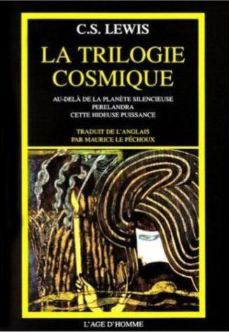
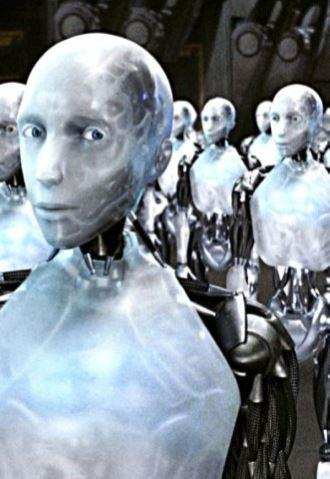

Dans mon exposé je me permettrai de présenter la philosophie religieuse comme la philosophie alternative à celle du transhumanisme.
Les nouvelles technologies, leur avancement fulgurant, sont appelées à rendre la vie humaine illimitée. Les Hommes pourront également faire revenir à la vie leurs parents morts. Le nouvel Homme, le transhomme, est appelé à être le seul maître de son destin et du destin de l’humanité, de rendre la vie éternelle possible non pas après la vie terrestre mais dans cette vie même. L’objectif du nouvel homme est donc de vaincre la mort. Oui, nous vivons aujourd’hui dans un siècle qui sera le siècle de la singularité technologique, terme signifiant le boum technologique énorme. Selon les pronostics des scientifiques c’est le XXIe siècle qui marquera la transition de l’humanité vers la transhumanité. Le tout nouveau type d’Homme va apparaitre dont le sens de la vie résidera dans le développement illimité de ses capacités. Cette nouvelle forme de vie humaine n’aura pas de fin, pas de finalité. Cela sonne rêveur n’est-ce pas ? Mais est-ce que c’est vraiment si beau et si innocent que cela ? Maintenant je vais vous exposer quelques éléments montrant le danger de cette nouvelle philosophie transhumaniste quand elle est poussée à son extrême.
1. POURQUOI LA MORT ET L’ATTENTE DE SA VENUE EST UN CONCEPT FONDAMENTAL DANS NOTRE VIE ?
La philosophie religieuse dit que tout Homme doit connaître sa mort. Il y a des choses dans la vie que l’Homme ne peut pas maîtriser.
L’Homme n’est pas maître de tout. Notre naissance, par exemple, n’a pas été un acte dépendant de nous. Il y a des choses dans la vie qui sont mystiques, puissantes justement par leurs mystères. Si l’on parle par exemple de la résurrection des morts cet acte doit également rester dans la catégorie des choses ne dépendant pas de nous. Ce sera le même acte divin que l’acte de naissance. Nous ne sommes pas les acteurs de la création du monde, nous en faisons partie, nous en sommes les produits.
Et le nombrilisme de l’Homme à croire qu’il est plus intelligent que la nature, plus intelligent que la vie, est voué à l’échec d’avance et c’est évident ! Même pas du temps qu’il fait dehors on n’est libres. On sera toujours limités par quelque chose ? Regarder : Quand il pleut nous devons prendre le parapluie. On est limités déjà rien que par le temps et les exemples de notre limitation ne finissent pas là. Il y en a plein. La vie éternelle sur terre serait une souffrance insupportable pour l’homme. Ce sera la même vie limitée par la sagesse de la nature comme nous l’avons aujourd’hui mais sauf qu’elle sera éternelle. D’éternelles souffrances !
La vie se termine avec la mort. Je mourrai un jour mais je n’ai pas envie de mourir. Toutes les philosophies et toutes les religions ont toujours été fondées sur ce postulat. Toute notre vie est basée sur cette relation « la vie – la mort » et sur l’attente de la mort. La vie c’est la sensation de cette fine limite entre la vie et la mort, c’est la marche sur le bord entre les deux. Et c’est précisément cette peur qui nous sauve du danger du non-sens de notre existence. C’est cette peur qui nous nourrit et qui nous rend toniques. Cela nous permet d’apprécier la vie parce que « notre mort, - comme disait don Juan dans la série de livre de Castaneda,- est toujours derrière notre épaule, elle marche toujours à nos côtés et elle attend ». On peut également citer ici Pasolini (ce n’est pas le plus pieux des personnages mais ici il a raison) : « La mort fait le montage de la pellicule de votre vie ». Un film avec le début, le développement et la fin n’est possible qu’avec le montage. Nous ne pouvons dire de l’homme quelque chose de fini qu’après sa mort. Pendant que nous vivons, rien n’est vraiment clair. Nous sommes toujours accompagnés par le point d’interrogation. Quand quelqu’un meurt, les proches et les amis de cette personne pensent à lui et ainsi communique avec lui. Cette communication est la seule véritable parce que pendant la vie nous ne communiquons qu’avec les masques et non pas avec la vraie personne. Les religieux vous diront que l’homme qui meurt s’étonne lui-même de ce qu’il est en réalité, en vrai. Tout cela pour vous dire que le sens d’un tel ou tel phénomène n’existe que si ce phénomène possède d’une fin, d’une finalité. Si la vie n’a pas de fin, il n’y aura pas de bilan, il n’y a pas de sens. Pas de fin, pas de bilan. Pas de fin pas de sens. J’aimerais vous citer à ce sujet un petit extrait poétique de la trilogie cosmique de C. S. Lewis que j’adore :

Un plaisir n'est total que lorsqu'il est passé dans le souvenir. Tu parles, Hõm, comme si le plaisir était une chose et la mémoire une autre. Ce n'est qu'une seule et même chose. [...] Ce que tu appelles se souvenir est le dernier acte du plaisir. [...] Quand nous nous sommes rencontrés toi et moi, notre rencontre s'est achevée très vite, ce n'était rien. Maintenant nous rendons quelque chose plus fort lorsque nous en évoquons le souvenir. Mais nous n'en connaissons pas encore grand-chose. Ce qu'elle sera quand je l'évoquerai au moment de m'étendre pour mourir, ce que d'ici là elle deviendra en moi tout au long des jours, voilà ce qu'est la véritable rencontre. L'autre n'en est que le commencement.
Rappelons-nous que le monde transhumain sera bien entendu le monde sans Dieu. Tout sera intellectualisé à outrance, il n’y aura aucune place au mystère. Cette intellectualisation du monde, l’académicien E.-M. Vogüé en a encore parlé il y a un siècle en arrière affirmant qu’elle ne rendra pas les hommes heureux, mais bien au contraire. L’intellectualisation absolue, selon lui, produit inévitablement le pessimisme et le désespoir :
L’erreur de l’Intellectualisme réside précisément dans l’application à des phénomènes d’un certain ordre, de méthodes qui convenaient pour d’autres. […]
Il y a une expérience religieuse, une expérience politique, puisqu’il y a des religions vivantes, des sociétés vivantes, et que la vie n’apparaît, ne s’épanouit, ne dure que si elle se conforme à des lois. Pour découvrir ces lois, ce ne sont pas des constructions logiques qu’il faut dresser, ce sont des observations qu’il faut recueillir, ce sont des mystères qu’il faut constater et comprendre comme tels. Il ne s’agit pas de rejeter la physique et la chimie, les mathématiques et la biologie, pour ne plus en appeler qu’à l’instinct. Il s’agit d’admettre que les problèmes religieux, moraux et sociaux ne sont des problèmes ni de physique, ni de chimie, ni de mathématiques, ni de biologie.
Donc pour traiter les questions religieuses il faut partir du registre religieux. Et l’éthique ne contredit ainsi à aucune façon à la science. Les deux sujets que je traite ici dans mon exposé vont de pair. L’un n’exclut pas l’autre. La synthèse de la science et de la religion j’y crois. Éliminer le domaine religieux de la vie de l’homme est une entreprise absolument suicidaire et l’histoire nous a toujours montré cela. La société transhumaniste voudra se débarrasser de Dieu comme d’un vieux pull démodé. L’humanisme religieux le nouvel homme n’en voudra plus. On nous promet la paix et le bonheur sans recours aux postulats bibliques. Mais ce genre de discours on l’a déjà entendu. Karl Marx disait que le sens de la vie c’est le développement de la créativité, le développement de sa propre personnalité. Le sens de la vie, selon lui, est contenu dans le temps dépensé pour le développement personnel. Cela s’appelait à l’époque « l’humanisme socialiste ». Rien de nouveau dans la perspective qui nous est proposée aujourd’hui par les transhumanistes. C’est juste qu’ils ont enlevé le mot « socialiste » et rajouté au mot « humanisme » le préfixe « trans ». Absolument rien de nouveau.
Le sujet que je traite ici suppose une précision des deux termes : exister et vivre. Exister et vivre se sont deux choses différentes. Dans la philosophie religieuse chrétienne l’existence illimitée est une faveur donnée au Diable. Le Diable va exister éternellement mais non pas vivre. L’Homme rêve d’exister éternellement, c’est normal, personne ne veut mourir comme j’ai dit plus haut. Mais exister cela veut dire aller au magasin, au travail, regarder la télé, manger, prendre plaisir etc. Mais cela ne signifie pas « vivre ». Vivre c’est tout autre chose. Il faut apprendre à le faire. La vie est une catégorie morale. Elle comprend en elle et la compassion et les exploits, et la repentance et la relation avec le Ciel, et le sacrifice et surtout la finalité qui permet de récapituler, de faire le bilan, qui nous fait réfléchir sur nos actes et sur leurs conséquences. Aucun philosophe grec si vous l’interrogez aujourd’hui ne voudrait vivre sur terre éternellement. C’est une éternelle prison cette éternelle existence. Les technologies peuvent offrir à l’homme cette existence illimitée mais l’homme n’en a pas besoin, il n’en veut pas au fond. Il se tuera lui-même au bout d’un moment dans cette éternité angoissante.
2. NOUVELLES TECHNOLOGIES VS ÉTHIQUE
Faisons maintenant accent sur le deuxième point de cet exposé. Quelle est la place de l’éthique, de Dieu et de la morale dans tout cela ? Oui, l’homme est un être dynamique, l’être qui avance. Il a été créé non pas comme un fait accompli mais comme une problématique. Ici tout le monde est d’accord, et les bioconservateurs et les transhumanistes.
Tout mouvement donne des conséquences d’où le monde changeant à tout instant. Et le spectre de ce mouvement est très large. Il peut y avoir un moment où l’homme cesse d’être l’homme. Il peut se surpasser en effet. Comme Nietzsche disait : « L’homme c’est ce qu’il faut surpasser ». Autrement dit, passer de la biologie à une sorte de surbiologie. Mais attention : ici commence le plus intéressant : dans ce surpassement on peut aussi bien rentrer dans le domaine angélique que dans le domaine diabolique. Donc, l’homme peut être surpassé de façons différentes. Avec l’ère du transhumanisme nous risquons de perdre l’homme élevé, moral, compatissant et de recevoir à sa place des monstres à deux sexes, privés de moral, qui, dans les degrés de leurs ruses, leurs perversions et leur désir acharné de plaisirs, ne pourront égaler qu’avec les démons. Et les démons resteront sans emplois. Et c’est exactement à ce moment-là que nous pourrons parler de la fin du monde. Ainsi, le plus grand danger du transhumanisme et de la vie illimitée c’est de perdre l’homme tel qu’il a été créé, celui qui fait des enfants, enterre les morts, repose ses espoirs sur l’Éternité, souffre de la perte des proches et de la vieillesse, éprouve la pitié pour les autres, aime les amis etc. D’où je déduis que les transhommes se ne seront pas les hommes.
Quelques précisions maintenant sur notre culture chrétienne européenne dans cette question et son personnage principal – le Christ. Il est venu sauver l’homme et non pas le transhomme.
Le devoir de l’Église a toujours été de faire de l’homme un surhomme. Et aujourd’hui, son devoir est de ne pas laisser l’homme devenir un transhomme. Le seul espoir que nous pouvons avoir c’est de se rappeler que tout au long de l’histoire humaine les époques qui changeaient ne causaient jamais vraiment le changement de l’homme. Si nous essayons de nous rappeler l’histoire du XIXe siècle, par exemple, nous verrons les hurlements d’émerveillement devant seulement deux choses : la vapeur et l’électricité. Les hommes sont devenus fous autour de cela ! Même les grands esprits n’ont pas été épargnés de cette ivresse généralisée. « Nous avons attrapé le Dieu par la barbe et maintenant nous aurons enfin le total bonheur », - disaient-ils. Ou bien les premiers avions, les hommes hurlaient de joie de pouvoir monter aux cieux ! Et aujourd’hui ? Qu’est-ce qui se passe aujourd’hui ? Nous prenons l’avion mais nous savons que ce n’est pas vraiment cela qui nous rend heureux. Remarquons également que toutes ces grandes joies du XIXe siècle ont été suivies par de grandes guerres. L’Histoire nous apprend que c’était toujours le cas : toujours les grandes joies ont été suivies par de grandes catastrophes.
Les nouvelles technologies avancent à grande vitesse, on l’a vu plus haut. Tout le monde se préoccupe de leur avancement mais personne ne veut penser à la place de l’éthique et de la morale dans tout cela. Quand l’homme est méchant dans ses intentions et stupide de manière générale, imaginez deux minutes un tel homme avec un marteau de pierre dans les rues de la ville. C’est dangereux. C’est encore plus dangereux quand le même homme apparait dehors avec une arme à feu. Et maintenant imaginez le même homme mais cette fois-ci augmenté, bionisé, le cauchemar devient niveau ++.
Si l’homme ne grandit pas moralement, le progrès des nouvelles technologies le transformera encore plus en meurtrier de l’humanité. Comme disait Théodore Roosevelt : « Un voleur sans parcours intellectuel vole un paquet de charbon, un voleur avec diplômes vole un chemin de fer entier. »
L’homme est en manque aujourd’hui (comme c’était toujours le cas) des vertus humaines telles que : entraide, pitié, compassion, charité ; et non pas la vertu transhumaniste de se surpasser. L’homme ne sent pas un tel manque. Donc on n’a pas de besoin vital de surpassement de soi, d’augmentation technologique. Ces idéaux du transhomme ne nourriront pas l’homme qui se trouve dans un vrai besoin, dans un vrai désespoir. Comme au XIXe siècle les hommes ont bien vu au final que même la plus belle charte n’efface pas un pli de souffrance au front des malheureux et ne donne pas un morceau de pain à l’affamé.
Les hommes, pas les transhommes, les hommes ont cet étonnement et cette crainte devant ce qui est plus haut que nous. Nous avons cet amour et cette compassion envers ceux qui sont comme nous. Nous avons cette peur de tomber dans ce qui est plus bas que nous. Autrement dit, l’homme doit savoir éprouver de l’amour, de la crainte et de la honte. C’est justement ce qui le fait homme. Et ce que c’est le transhomme je ne le sais pas.
Nous devons ainsi être la vertèbre morale de ce monde. Si le XXIe siècle n’est pas un siècle de l’humanisme religieux avec l’homme comme une créature tournée vers Dieu, l’homme cessera d’exister. L’homme disparaitra. Et tous ces fantasmes autour du futur et de l’homme augmenté il n’y a rien d’humain dedans. Si nous lisons l’Apocalypse il nous parle justement du monde inhumain, monde totalement déshumanisé. On n’y aura plus ni de pitié ni de situations spontanées comme :
- Est-ce que je peux passer ?
- Normalement non, mais bon je fais une exception.
Tout sera robotisé, on aura des tampons sur le front ou plutôt même des puces intégrées. Autrement dit, ce sera le progrès inhumain. Et c’est justement cela le règne de l’antéchrist si l’on parle en termes chrétiens.
Rappelons-nous, chers amis, que l’amour c’est la valeur primordiale de l’humanité. Les médecins aiment leurs patients quand ils sont en train de les opérer, le pompier aime son travail sinon il ne se serait pas jeté dans le feu en risquant sa vie. Ils ont un certain devoir devant l’humanité et ils le savent et ils en sont heureux.
Ainsi, tout ce qui est grand et haut c’est cela l’amour. Et la notion de l’amour est bien évidemment étroitement liée avec la notion du sacrifice. Le sacrifice c’est la mesure de l’amour. Transhumanisme ou pas transhumanisme, si tu aimes tu fais des sacrifices. Pourquoi le patron de l’entreprise qui aime ses employés meurt à 55 ans ? Parce qu’il s’inquiète pour chacun, il se sent responsable de chacun d’eux. Parce que quand tu aimes tu brûles et tu te consumes vite. Et quand tu n’aimes pas tu peux vivre facilement jusqu’à 100 ans. Ainsi, la vie c’est rien d’autre qu’un sacrifice.
Et pour conclure je citerai Dostoïevski : « Si Dieu n’existe pas tout est permis ». Alors ? La mort ou la vie éternelle ?
Partager cette page